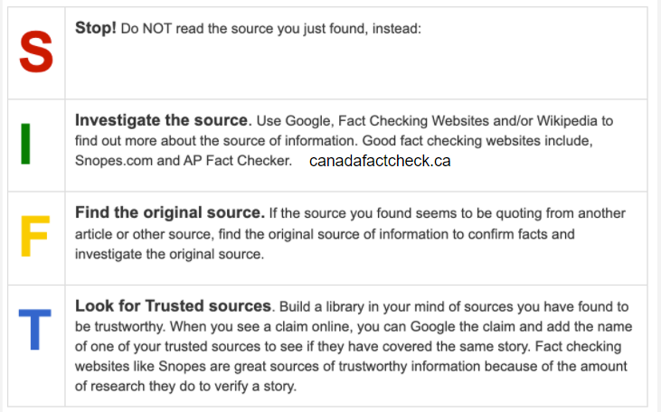
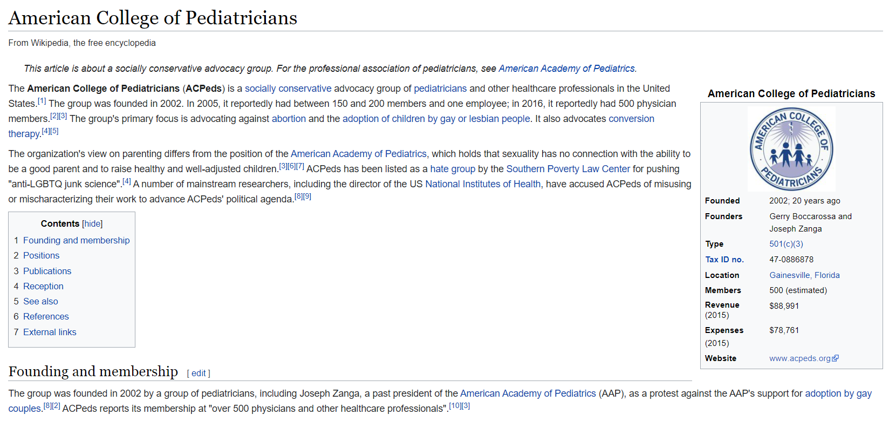
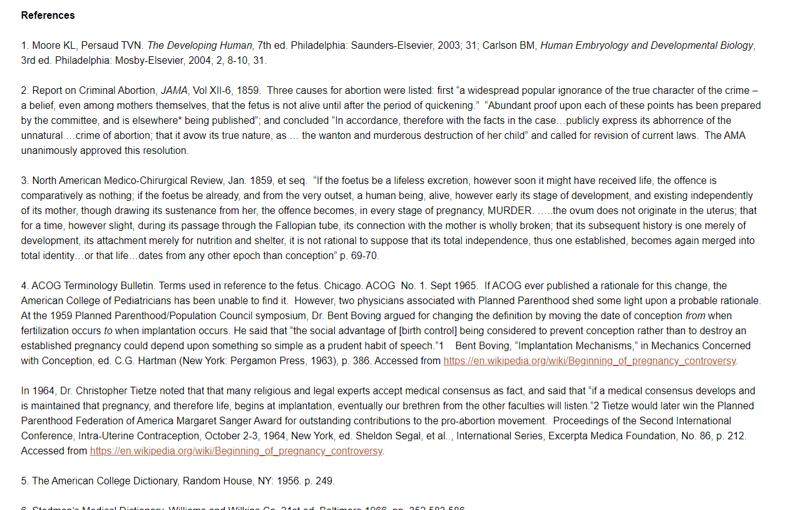

Recently, I stumbled across a rather interesting website known as the "American College of Pediatricians". At first glance, it seems like a trustworthy site by a pediatrics group. But before you look any further at the website—STOP!
That's the first step of the SIFT model—a strategy for evaluating the trustworthiness of a website. It stands for "Stop, Investigate the Source, Find the Original Source, and Look for Trusted Sources".
 The SIFT ModelLet's try using this model to evaluate the website together, and see what we can find out about the American College of Pediatrics.
Evaluating the Website
Okay, now we've stopped browsing the website. What's next?
Investigate the Source. In order to do this, we have to try to answer four questions:
- Do you know the website?
- What is its reputation?
- What is your purpose?
- How do you feel?
Currently, I don't know this website very well, and I'm unsure of its reputation. My purpose is to see if it is a reliable source of pediatrics information. From just a quick glimpse of this website, I feel like it seems legitimate. Let's investigate further!
One trick for evaluating a website's reputation is checking its Wikipedia entry. This usually shows the general sentiment around the website.
 The Wikipedia entry for the ACPWhoa, whoa, whoa. "ACPeds has been listed as a hate group by the Southern Poverty Law Center for pushing "anti-LGBTQ junk science."
A hate group?
Clearly, this website is not at all how it seems. While its homepage may say that it is "enabling all children to reach their optimal physical and emotional health and well-being", it seems as though it is a group that advocates against LGBTQ and abortion.
Other sources, including Psychology Today, have also reported that it is an anti-LGBT hate group.
Find the Original Source. Investigating the source has been intriguing enough. But now, let's move on to the next step, which is finding the original source.
In the various blog posts written by the ACP, there seems to be numerous citations backing up their claims, from reputable sources such as the CDC.
 The citations list under an ACP blog postHowever, from further investigation, it seems like they are distorting research and information to fit their agenda. For instance, in this statement, the former NIH director mentions how the ACP has distorted his scientific observations to make a point against homosexuality.
Look for Trusted Sources. Okay, so clearly the American College of Pediatricians is not a trusted source of information for pediatrics. Let's conduct some research to build a library of trusted sources we can use instead.
From an article on the NCBI website:
It also seems like the American College of Pediatricians could be mistaken for the American Academy of Pediatrics by the unsuspecting.
Looking at the Colours
Wow! The SIFT model was able to reveal so much information about the website. Without that research, I may have been fooled and thought that this was a legitimate website.
Part of that reason may have been the website's effective use of colours. Let's analyze their colour scheme and see what meaning they convey.
The header of the ACP websiteIt seems like the primary colours used on the website are blue and yellow.
Blue
The colour blue is generally associated with trust, loyalty, and responsibility. It has a calming and relaxing effect, and conveys feelings of reliability and honesty. Makes sense for a website for supposed pediatrics information!
Yellow
The colour yellow is generally associated with happiness, intellect, and positivity. It inspires thought and creativity, and stimulates the logical part of the brain. It also conveys feelings of creativity and confidence. It also certainly makes sense for such a website to use a colour that symbolizes intellect and thought, as it could lead to the reader subconsciously placing more trust.
Reviewing the American College of Pediatricians definitely led to a massive surprise. Who would have thought that such a credible-looking website would have been an anti-LGBTQ hate group?
From this, I've learnt how to use the SIFT model to evaluate authenticity of a website, as well as how colours can change one's perception of a website. One should certainly be more careful when browsing the Internet for important research—anything can be fake while appearing to be legitimate.